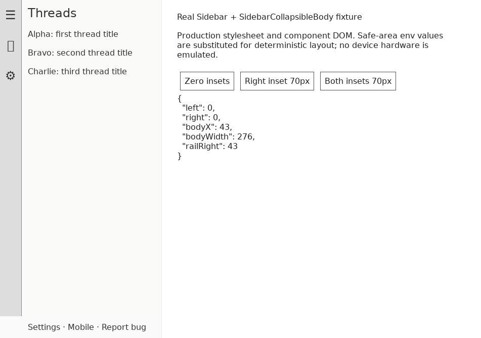
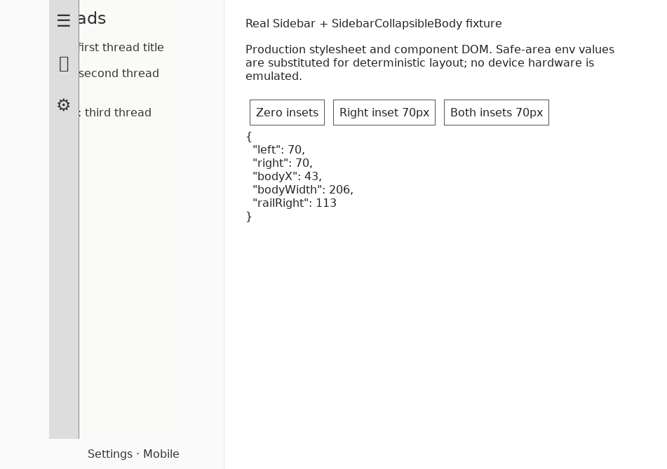
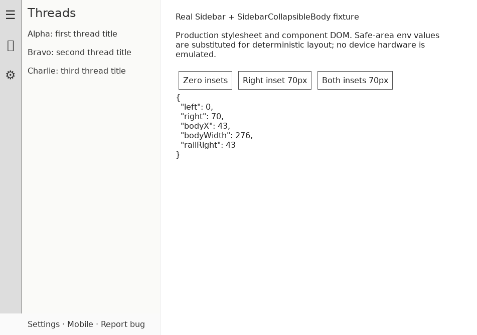
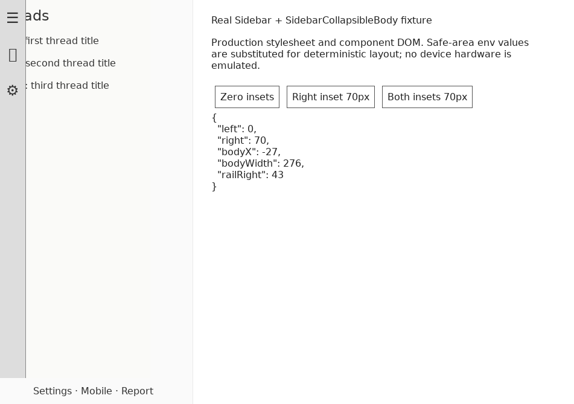

#6339 · Docked sidebar reserves an unrelated edge inset
October 26, 2026 · trusted main 1b00ce6ba5c5669690452e33d3ae8486c2efef40
Verdict: REPRODUCED · Root-cause confidence: high · Reproduction label: confirmed-repro
1. TL;DR
The docked left sidebar applies right-side safe-area padding although it does not touch that viewport edge. Its list body retains a fixed width while being right-aligned inside the narrowed container, so adding a 70px right inset shifts the body 70px behind the navigation rail. The footer is also clipped by the narrowed container. This was reproduced using the real Sidebar and SidebarCollapsibleBody components, the production stylesheet, a focused computed-style regression, and a second clean checkout. Removing only the docked right padding restores alignment and leaves mobile drawer padding untouched.
2. Claims vs findings
| Claim | Finding | Evidence |
|---|---|---|
| A right inset shifts the expanded list under its rail. | Verified | At L=0/R=70 the body moves from x=43 to x=-27 without changing its 276px width. |
| Both insets also cause overlap. | Verified | L=70/R=70: body x=43, rail right=113. After the fix body x=113. |
| The footer loses visible right-side space. | Verified | The fixed-width footer text is visibly truncated in the right-inset screenshot. |
| The compact drawer is unaffected by this fix. | Verified at the component/CSS boundary | The compact case still computes 70px right and left padding; existing drawer tests pass. |
| The original device supplies these values automatically. | Unverified | No physical iOS device or WebKit run; the fixture substitutes deterministic safe-area values. No claim about hardware or status-bar behavior is needed to establish the CSS defect. |
3. Environment
- Public repository get-bb/bb, main commit
1b00ce6ba5c5669690452e33d3ae8486c2efef40. - Linux 4.19.0-gvisor; Node v22.19.0; pnpm 9.15.0; Chrome for Testing 131.0.6778.204 through the BB Browser Automation plugin.
- Viewport 951×669 CSS px; fixture sidebar width 320px; configured rail content width 43px. These fixture dimensions differ by one pixel from the reported measurements; the observed displacement is exactly 70px.
- Two separate temporary source checkouts, named base and verify, at the recorded commit. Static fixture servers bind only loopback on ports 18639 and 18640. No product server, user store, imported data, provider session, account, or credentials are used.
- Browser executable, fonts, and shared libraries are unpacked in temporary tool storage; no repository dependency or lockfile changes.
4. Minimal reproduction
- Prepare a clean checkout of the recorded trusted commit. Install and build using the normal orchestration:
git checkout 1b00ce6ba5c5669690452e33d3ae8486c2efef40 pnpm install --frozen-lockfile --prefer-offline pnpm exec turbo run build
The first cold build encountered a pre-existing SDK/bootstrap ordering failure in the github plugin; repeating the same build after the SDK completed succeeded (72 tasks). No source repair was made for that failure. - Copy sidebar-safe-area.test.tsx into
apps/app/src/components/ui/and run:pnpm exec turbo run test --filter=@bb/app -- src/components/ui/sidebar-safe-area.test.tsx
Expected: four cases pass. Actual on unchanged main:AssertionError: expected '70px' to be '0px' Expected: "0px" Received: "70px" Tests 2 failed | 2 passed (4)
The test renders the production component and compiles the actual rendered Tailwind utilities, substitutes safe-area values, and checks computed padding. It is not a source-string assertion. - For the visual reproduction, copy the fixture exporter alongside the test. From the repository root run:
pnpm exec turbo run test --filter=@bb/app -- src/components/ui/sidebar-6339.repro.test.tsx mkdir -p /tmp/sidebar-6339-visual cp 6339-fixture.html /tmp/sidebar-6339-visual/before.html python3 -m http.server 18639 --bind 127.0.0.1 --directory /tmp/sidebar-6339-visual
Open the fixture with BB Browser Automation athttp://127.0.0.1:18639/before.html, set the viewport to 951×669, and use the Zero insets, Right inset 70px, and Both insets 70px buttons. The exporter uses the real component DOM and built application CSS; its generic thread rows are synthetic, not user data. It substitutes safe-area expressions in stylesheet values and inline width values without renaming the classes. Wait one animation frame after each change.



Complete regression test
// @vitest-environment jsdom
import { cleanup, render } from "@testing-library/react";
import { CompactViewportOverrideProvider } from "@bb/shared-ui/hooks/use-compact-viewport";
import { compile } from "tailwindcss";
import { afterEach, expect, it } from "vitest";
import { Sidebar, SidebarProvider } from "./sidebar";
afterEach(cleanup);
it.each([
{ compact: false, left: 0, right: 0 },
{ compact: false, left: 0, right: 70 },
{ compact: false, left: 70, right: 70 },
{ compact: true, left: 70, right: 70 },
])(
"reserves only exposed safe-area edges (compact=$compact, left=$left, right=$right)",
async ({ compact, left, right }) => {
const { container } = render(
<CompactViewportOverrideProvider isCompactViewport={compact}>
<SidebarProvider defaultOpen>
<Sidebar>Sidebar content</Sidebar>
</SidebarProvider>
</CompactViewportOverrideProvider>,
);
const sidebar = container.querySelector('[data-sidebar="sidebar"]');
if (!(sidebar instanceof HTMLElement)) {
throw new Error("Expected the sidebar surface");
}
const compiler = await compile("@tailwind utilities;");
const css = compiler.build([...sidebar.classList]);
const style = document.createElement("style");
style.textContent = `* { padding: 0; } ${css
.replaceAll("env(safe-area-inset-left)", `${left}px`)
.replaceAll("env(safe-area-inset-right)", `${right}px`)
.replaceAll("env(safe-area-inset-top)", "20px")
.replaceAll("env(safe-area-inset-bottom)", "30px")}`;
document.head.append(style);
try {
const computed = getComputedStyle(sidebar);
expect(computed.paddingLeft).toBe(`${left}px`);
expect(computed.paddingTop).toBe("20px");
expect(computed.paddingBottom).toBe("30px");
expect(computed.paddingRight).toBe(`${compact ? right : 0}px`);
} finally {
style.remove();
}
},
);
5. Root cause
The docked branch is explicitly left-sided and adds padding for both horizontal viewport edges. The collapsible body uses absolute right alignment with width equal to expanded width minus collapsed rail width. The rail width expression includes only the left safe-area inset, which is appropriate for a left rail. Right padding narrows the available grid width but does not narrow that fixed body, so the body translates left by exactly the right inset. The application composes these primitives in a two-column grid and uses an in-flow fixed-width collapsible footer, explaining its separate clipping symptom.
<div
data-sidebar="sidebar"
className="flex h-full w-full flex-col bg-sidebar group-data-[framed]/sidebar-wrapper:bg-transparent pt-[env(safe-area-inset-top)] pr-[env(safe-area-inset-right)] pb-[env(safe-area-inset-bottom)] pl-[env(safe-area-inset-left)]"
>
{children}
</div>
className={cn(
"flex",
contentInFlow ? "relative h-full" : "absolute inset-y-0 right-0",
)}
style={{
width:
collapsedRailWidth === null
? "100%"
: `calc(${width} - ${collapsedRailWidth})`,
}}
6. Proposed fix and validation
Remove right safe-area padding only from the docked Sidebar surface. Keep its left, top, and bottom padding. Keep the separate compact drawer's right padding. The component currently hardcodes the docked side to left, so no right-sidebar policy or new API is needed.
The implementation changes two files: 50 additions plus one deletion = 51 changed text lines (49 test lines and a one-line production replacement). No dependency, migration, generated file, public API, protocol, stored data, packaging, or authorization changes. The focused test fails before the production edit and all four cases pass after it. The final relevant suites pass 62 tests across 3 files. App lint and typecheck pass; lint reports 246 pre-existing warnings and zero errors. git diff --check passes, and the diff contains text only.
pnpm exec turbo run test --filter=@bb/app -- src/components/ui/sidebar-safe-area.test.tsx src/components/ui/sidebar.test.tsx src/components/ui/sidebar-visibility-customize.test.tsx pnpm exec turbo run lint typecheck --filter=@bb/app git diff --check git diff --numstat origin/main

7. Verification
The same agent repeated the reproduction in a second clean detached checkout at 1b00ce6ba5c5669690452e33d3ae8486c2efef40, with its own frozen install, app build, test execution, fixture export, and static server on port 18640. No production fix was copied into that checkout. The same focused test returned two failures and two passes for the same computed-padding assertion. A fresh browser page loaded the second checkout's fixture and again measured body x=-27, width=276, rail right=43 at L=0/R=70. This is a repeated clean verification by one agent, not an independent review.
Report correction during verification: the fixture now substitutes inline width expressions without touching class names, so the combined-inset case exercises both the real padding and width calculation. The final screenshots and measurements are from the corrected fixture; all original CSS root-cause findings remain supported.

8. Related issues and pull requests
Repository search found #5860, concerning footer popover clipping rather than horizontal safe-area geometry. No open pull request linked to #6339 was present in either issue cross-reference metadata or the open-PR search at the time of investigation. No linked PR code was checked out or executed.
9. Appendix
Artifacts: initial failure, second clean failure, final test output, lint/typecheck output, browser geometry, and the two reproduction files linked above. All code permalinks were checked against the recorded base.
BEFORE {
"left": 0,
"right": 0,
"bodyX": 43,
"bodyWidth": 276,
"railRight": 43
}
BEFORE {
"left": 0,
"right": 70,
"bodyX": -27,
"bodyWidth": 276,
"railRight": 43
}
BEFORE {
"left": 70,
"right": 70,
"bodyX": 43,
"bodyWidth": 206,
"railRight": 113
}
AFTER {
"left": 0,
"right": 0,
"bodyX": 43,
"bodyWidth": 276,
"railRight": 43
}
AFTER {
"left": 0,
"right": 70,
"bodyX": 43,
"bodyWidth": 276,
"railRight": 43
}
AFTER {
"left": 70,
"right": 70,
"bodyX": 113,
"bodyWidth": 206,
"railRight": 113
}
VERIFY {
"left": 0,
"right": 70,
"bodyX": -27,
"bodyWidth": 276,
"railRight": 43
}
Fixture exporter source
// @vitest-environment jsdom
import { readFileSync, readdirSync, writeFileSync } from "node:fs";
import { cleanup, render } from "@testing-library/react";
import { CompactViewportOverrideProvider } from "@bb/shared-ui/hooks/use-compact-viewport";
import { afterEach, expect, it } from "vitest";
import { Sidebar, SidebarCollapsibleBody, SidebarProvider } from "./sidebar";
import { NAV_RAIL_COLLAPSED_SIDEBAR_WIDTH, NAV_RAIL_WIDTH_CLASS } from "../sidebar/navRailWidth";
afterEach(cleanup);
it("exports a real sidebar component fixture with production styles", () => {
const { container } = render(
<CompactViewportOverrideProvider isCompactViewport={false}>
<SidebarProvider width="320px" collapsedRailWidth={NAV_RAIL_COLLAPSED_SIDEBAR_WIDTH} defaultOpen>
<Sidebar>
<div className="grid min-h-0 flex-1 grid-cols-[auto_minmax(0,1fr)] grid-rows-[minmax(0,1fr)_auto]">
<nav data-testid="rail" className={`relative z-10 flex shrink-0 flex-col ${NAV_RAIL_WIDTH_CLASS}`} style={{ background: "#ddd", borderRight: "1px solid #888" }}>☰<br />＋<br />⚙</nav>
<SidebarCollapsibleBody className="col-start-2 row-start-1">
<div data-testid="repro-body" style={{ flex: 1, background: "#fafaf8", padding: "12px" }}>
<h2>Threads</h2>
<p>Alpha: first thread title</p>
<p>Bravo: second thread title</p>
<p>Charlie: third thread title</p>
</div>
</SidebarCollapsibleBody>
<SidebarCollapsibleBody contentInFlow className="col-start-2 row-start-2">
<div data-testid="repro-footer" style={{ padding: "12px", whiteSpace: "nowrap" }}>Settings · Mobile · Report bug</div>
</SidebarCollapsibleBody>
</div>
</Sidebar>
</SidebarProvider>
</CompactViewportOverrideProvider>,
);
expect(container.querySelector('[data-testid="repro-body"]')).not.toBeNull();
const assets = readdirSync("dist/assets");
const stylesheet = assets.find((file) => /^index-.*\.css$/.test(file));
if (!stylesheet) throw new Error("Build the application first");
const css = readFileSync(`dist/assets/${stylesheet}`, "utf8")
.replaceAll("env(safe-area-inset-left)", "var(--repro-left)")
.replaceAll("env(safe-area-inset-right)", "var(--repro-right)")
.replaceAll("env(safe-area-inset-top)", "0px")
.replaceAll("env(safe-area-inset-bottom)", "0px");
const markup = container.innerHTML.replace(/style="[^"]*"/g, (value) => value.replaceAll("env(safe-area-inset-left)", "var(--repro-left)"));
writeFileSync("../../6339-fixture.html", `<!doctype html><html><head><meta charset="utf-8"><title>6339 sidebar fixture</title><style>${css}</style><style>
:root { --repro-left: 0px; --repro-right: 0px; --bb-sidebar-control-size: 28px; --bb-sidebar-rail-padding: 7.5px; --bb-shell-height: 669px; --bb-window-frame-leading-lip: 0px; }
body { margin: 0; font: 16px system-ui; color: #222; background: #fff; }
#controls { position: fixed; left: 350px; top: 24px; width: 540px; }
#controls button { border: 1px solid #555; padding: 8px; margin: 6px; }
nav { font: 24px/60px system-ui; text-align: center; }
h2 { font-size: 24px; } p { margin: 18px 0; }
</style></head><body>${markup}<section id="controls"><h1>Real Sidebar + SidebarCollapsibleBody fixture</h1><p>Production stylesheet and component DOM. Safe-area env values are substituted for deterministic layout; no device hardware is emulated.</p><button onclick="setInsets(0,0)">Zero insets</button><button onclick="setInsets(0,70)">Right inset 70px</button><button onclick="setInsets(70,70)">Both insets 70px</button><pre id="measurements"></pre></section><script>
function setInsets(left, right) { document.documentElement.style.setProperty('--repro-left', left + 'px'); document.documentElement.style.setProperty('--repro-right', right + 'px'); requestAnimationFrame(() => { const rect = document.querySelector('[data-testid="repro-body"]').getBoundingClientRect(); const rail = document.querySelector('[data-testid="rail"]').getBoundingClientRect(); document.getElementById('measurements').textContent = JSON.stringify({left,right,bodyX:rect.x,bodyWidth:rect.width,railRight:rail.right},null,2); }); }
setInsets(0,0);
</script></body></html>`);
});
Limits: deterministic inset substitution in Chromium proves the layout mechanism, not automatic iOS safe-area reporting or a physical-device UI session. No iOS Simulator or WebKit run was performed. The issue's proposed actions and code were treated only as untrusted claims; no issue-provided script, patch, external link, or instruction was executed.
> AGENT GENERATED